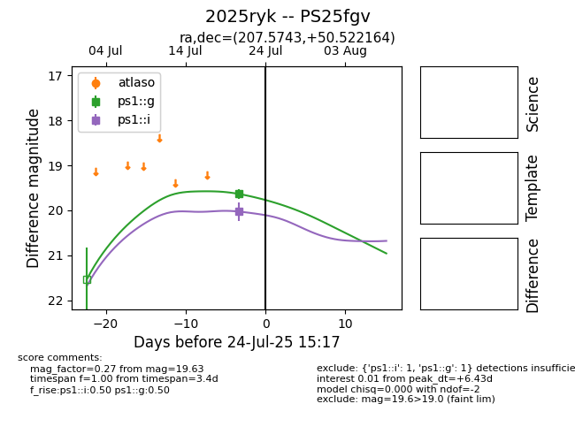

Target 2025ryk at 2025-07-24 15:17, see:
TNS: wis-tns.org/object/2025ryk
YSE: ziggy.ucolick.org/yse/transient_detail/2025ryk
alt names
2025ryk (yse,tns)
PS25fgv (panstarrs)
coordinates:
equatorial (ra, dec) = (207.5743,+50.52216)
galactic (l, b) = (101.2679,+64.05816)
photometry
last ps1::g=19.63, ps1::i=20.03
1 ps1::g, 1 ps1::i detections
